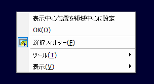
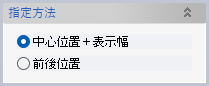
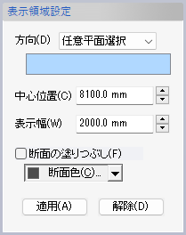
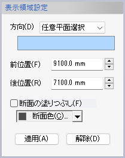
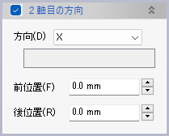
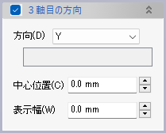

表示領域指定（座標軸上で設定）
表示領域指定（座標軸上で設定）
表示領域を指定する際に、3D空間内の方向を1〜3個選んで、それぞれの方向における表示範囲を設定します。
操作方法
表示範囲をここからここまでと指定するための方向を選ぶと、表示領域の両端面のプレビューとクリップされる領域を示す矢印が表示されます。矢印をドラッグしたり範囲を数値入力したりして表示領域を調整し、OKボタンをクリックします。
適用ボタンをクリックすると、コマンドを終了させずに表示領域を適宜確認することができます。
コマンド実行中に、ドキュメントウィンドウでコンテキストメニューを表示して「表示中心位置を領域中心に設定」することもできます。

パラメータ
指定方法
表示領域の指定方法を選びます。
表示領域設定
 -
指定方法に応じて、「中心位置＋表示幅」または「前位置＋後位置」を入力します。
- 断面の塗りつぶし
- 断面を指定色で塗りつぶすようになります。

- 解除
- クリックすると指定済みの表示領域がすべて解除されます。
２軸目の方向
追加で2つ目の軸を選んで表示領域を指定できます。
３軸目の方向
追加で3つ目の軸を選んで表示領域を指定できます。